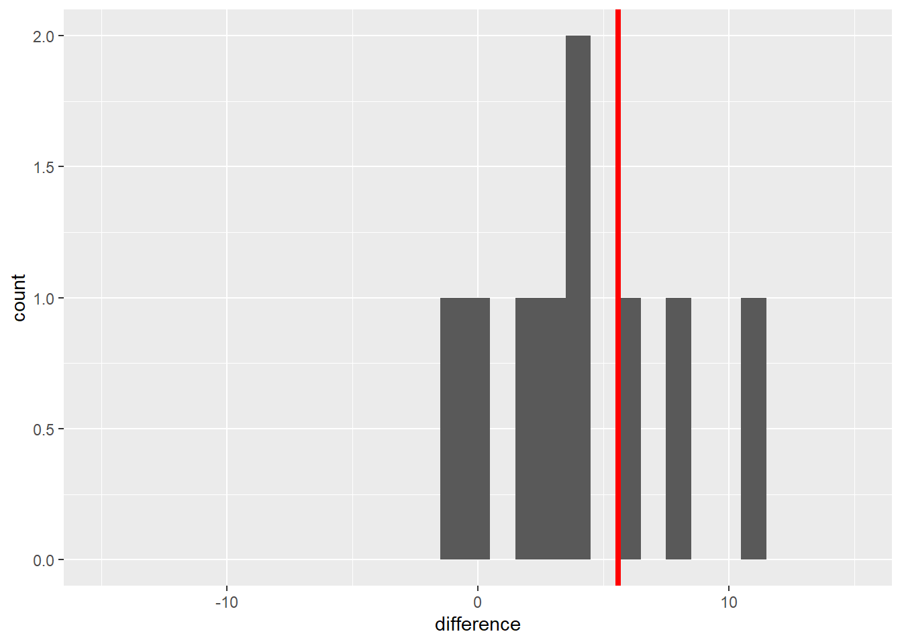

Chapter 4 Two-Treatment Comparisons
Until now, we have worked with a single population. To recap our progress: -
In Unit 1, we learned a population is a complete group of individuals for which we wanted to develop a summary or prediction. We learned to describe the center of this population with the population mean and its spread using the sum of squares, variance, and standard deviation.
In Unit 2, we used the normal distribution model to describe the pattern with which individuals in many populations are spread around the mean. Individuals closer in value to the population mean were predicted to occur more frequently that that were further in value. Based on the frequency with which values were predicted to occur, we calculated the probability an individual from that population would fall within a given range of values.
In Unit 3, we worked with samples, subsets drawn from a population. We saw how sample means are normally distributed, regardless of the population distribution from which they come. The standard error describes the spread of individual samples around the sample mean. This distribution was modeled with the t-distribution, which is wider when the number of samples is low and taller when the number of samples was greater.
4.1 Side-by-Side Trials
In this unit, we will finally put our statistical knowledge to work to test treatment differences. We will work with a simple but important experimental design – the two-treatment comparison. Here in Ohio, this is referred to as a side-by-side trial, but you may have a different term for it where you work. If you work in retail agronomy, you have probably conducted these trials. Typically, you would split one or more fields into treated and untreated fields. For example, you might “stripe” an individual field with treated and untreated areas:

Or, you might divide multiple fields in half like this:

In either case, a side-by-side trial deals with two treatments and can be analyzed using a t-test. In these next two units we will compare different designs for side-by-side (or paired) trials, use R to randomly assign treatments, understand how the t-distribution allows us to test for significance, and run these tests in R.
4.2 Blocked Design
In Unit 1 we learned the hallmarks of a designed trial are the randomization and replication of treatments. Each treatment should be observed several times in different experimental units. In our work, often experimental unit is a fancy termfor a plot, half a field, or a pot.
Observing the treatment several times has two benefits. First, the average of those observations – the sample mean – will likely be closer to the true population average for that treatment than the individual observations. Second, variation among the observations can be used to give us a sense how much environmental factors – in contrast with our treatment – cause our observations to vary.
It is also important to randomize treatments in order to reduce intentional or unintentional biases that might skew our interpretation of results. For example, one treatment might be biased by always putting it to the north of another treatment or, more insidiously, in the better half of a field. Deliberate randomization reduces the probability of either scenario.
That said, reality sometimes intervenes intervenes. Soil types change across a field, as do microclimates around field edges and management histories (e.g. an old feedlot). Though randomization reduces the likelihood that treatments are concentrated in one areas, it may not produce as even a distribution of treatments across the experimental area as we would like. We could conceivably end up with all replicates of a treatment level concentrated in one half of the field:

Similarly, if we are using multiple fields, both halves of a field could receive the same treatment in a randomized design

Blocked experimental designs place a restriction on the random assignment of treatments to plots. Instead of assigning treatments randomly within a field or across a state. We instead force both treatments to occur within a field section or in the same field, so that our treatment maps look more those we showed in the first two figures of this unit.
Here is another way to think about this:
Our statistical test this week is based on comparing samples from two populations, the control population and the population receiving starter.
We want to design our experiment so that aside from the effect of the treatment, the two populations are as identical as possible.
The blocked approach, in general, helps create two populations that are similar.
In the exercise exercise_randomizing_plots in R, you will learn how to design your own blocked two-treatment trial.
4.3 Case Study
An in-furrow corn starter (6-24-6 plus micronutrients) was tested against a control (no starter) in a trial in western Ohio. Treatments were blocked (paired) so that each treatment occurred once per block. Plot numbers are given on the x-axis of the map below. There were 10 blocks. The data are in a data.frame named “corn_starter.”
corn_starter = read.csv("data-unit-4/corn_starter.csv")
Here are the first six rows of our dataset.
head(corn_starter)## block plot treatment yield
## 1 1 11 Starter 193.4
## 2 1 12 Control 194.2
## 3 2 21 Starter 192.2
## 4 2 22 Control 189.0
## 5 3 31 Control 193.8
## 6 3 32 Starter 194.2Note the column headings: treatment refers to the treatment level (Control or Starter) and yield refers to the measured yield.
Let’s make a quick histogram plot of the data using ggplot. For the first time, in this unit, we are working with samples from two populations: the control and treatment populations. We will have separate histograms for each set of samples.
ggplot(data = corn_starter, aes(x=yield)) +
geom_histogram() +
facet_grid(~treatment)## `stat_bin()` using `bins = 30`. Pick better value with `binwidth`.
The mean yield of the sample from the population that received starter is greater than the mean yield of the sample of the population that received the control (no starter).
corn_starter %>%
group_by(treatment) %>%
summarise(yield = mean(yield))## # A tibble: 2 x 2
## treatment yield
## <chr> <dbl>
## 1 Control 190.
## 2 Starter 196.Instead of studying the control and treatment sample sets independently, however, we can restructure our dataset to analyze it another way. Data set structure describes how our columns and rows are organized. Do our treatment levels, for example, differ down rows or across columns? In the dataset above, for example, our two treatment levels (control and starter) vary among rows in the treatment column.
When we restructure a dataset, we rearrange it so that values that formally varied among rows vary across columns, or vice versa. If you have every used a PivotTable in Excel, you have restructured data. In exercise_restructuring_data in RStudio, you will learn how to similarly restructure data in R.
In our case study, we will restructure the treatment column by separating its values among two new columns, control and starter. We will create a new difference column by subtracting the yield of the control plot from the yield of the starter plot in each block. By doing this, each block is now summarized by one value, the difference between treatments.
## block Control Starter difference
## 1 1 194.2 193.4 -0.8
## 2 2 189.0 192.2 3.2
## 3 3 193.8 194.2 0.4
## 4 4 186.4 190.5 4.1
## 5 5 196.4 198.7 2.3
## 6 6 189.8 193.4 3.6
## 7 7 187.6 196.0 8.4
## 8 8 185.3 196.7 11.4
## 9 9 184.5 201.5 17.0
## 10 10 192.6 198.9 6.3In this new population, individuals with a positive value indicate a block where the starter out-yielded the control. Negative differences indicate the control out-yielded the starter. We can plot these differences in a histogram, also.
## Warning: Removed 1 rows containing non-finite values (stat_bin).## Warning: Removed 2 rows containing missing values (geom_bar).
Most of the individuals in this new population are greater than 0. The population mean, indicated by the vertical red line, is 5.6 bushels/acre. So far, our starter shows promise: a 5.6 bushel/acre mean increase in yield. Of course, this immediately raises the next questions:
How consistently is there a positive response to this starter product?
If we repeated this experiment, would we likely see a difference equal to zero or – even worse – one less than zero, in which case, yield actually decreased with the use of starter fertilizer?
We can use the t-distribution to answer this question, either by calculating the confidence interval of the mean difference, 5.6 bushels/acre, or testing the difference between the control and treatment means using a t-test.
4.4 Confidence Interval
In Unit 3, we worked with the sample mean, which is based on individual samples from an individual population. We defined the confidence interval around a sample mean, based on the variation in sample values around that sample mean.
We can use the same approach now on our sample differences: we will calculate the confidence interval around the mean difference between our control and treatment. If that interval contains zero or negative values, that means it is possible that control and treatment yields are the same, or even that the control yields more than the treatment.
Recall that to calculate the confidence interval we need two values:
the minimal t-value that: is associated with our degrees of freedom and is expected to encompasses 95% of the distribution of sample means
the standard error of the difference.
We calculate the minimal t-value using the qt() function in R.
min_t = qt(0.975, df=9)
min_t## [1] 2.262157Remember, degrees of freedom is equal to n-1. Our new population has 10 degrees of freedom, therefore, df equals 9 above. The minimal t-value is about 2.26 .
We also need to know the standard error of the population. We will calculate that the same as we did for a single variable in Unit 3. Given our sample set is composed of treatment differences, though, we will call this statistic the standard error of the difference.
First, we calculate the standard deviation of the treatment differences using the sd() function:
sd = sd(corn_differences$difference)
sd## [1] 5.404001Next, we divide the standard deviation by the square root of the number of differences. This is equal to the number of blocks.
Then we divide the standard deviation by the square root of the number of observations (10) to get the standard error of the difference:
sed = sd/sqrt(10)
sed## [1] 1.708895Finally, since the confidence interval is constructed with the sample mean as its center, we calculate the sample mean:
sample_mean = mean(corn_differences$difference)Our sample mean is 5.59 and the standard error of the difference is about 1.71 We additionally calculated pop_mean, the mean of our population.
We can now calculate the confidence interval, using sample mean,
min_t, and sed. To calculate the lower limit, we subtract the
product of min_t and sed from the sample mean:
lower_limit = sample_mean - (min_t * sed)
lower_limit## [1] 1.724211Similarly, the upper limit is calculated by adding the product of
min_t and sed to the sample mean:
upper_limit = sample_mean + (min_t * sed)
upper_limit## [1] 9.455789It is common practice to present this confidence interval in parentheses, with the lower and upper limits separated by commas.
CI = paste0("(", lower_limit, ",", upper_limit, ")")
CIIt is also good practice to round your final results so that your answers have either the same number of decimal places as the original measures. By doing this, we more fairly the precision of the original measurements.
CI = paste0("(", round(lower_limit,1), ",",
round(upper_limit,1), ")")
CIThe 95% confidence interval ranges from 1.7 to 9.5 bushels/acre and, notably, does not include zero. Since zero is outside the 95% confidence interval, there is greater than a 95% probability the population mean is not equal to zero. Another way of saying this is there is less than a 5% probability that the population mean is equal to zero. Or, finally, the population mean is significantly different from zero at the 5% (or 0.05) level.
Going our population was composed of the difference of starter and control, we can say the starter effect is significantly different from the control at the 5% level.
Learn how to construct your own confidence interval in exercise_confidence_interval in RStudio.
4.5 T-Test
An alternative to the confidence interval is the t-test. The first step of the t-test is to calculate our observed t-value:
\[ t = \frac{\bar{x} - \mu}{SED} \] Where \(\bar{x}\) is the observed population mean, \(\mu\) is the hypothesized population mean (usually 0, meaning no treatment difference), and \(SED\) is the standard error of the difference.
In our example above:
\[ t = \frac{5.59 - 0}{1.71} = 3.27\]
Our observed t-value is about 3.27. If there were no difference between the starter and the control, of course, t would be equal to zero. So there is a difference between our observed mean and zero of \(t=3.27\). Using R, we can quickly calculate the probability of observing a value \(t=3.27\) above – or below our population mean of 5.59.
library(fastGraph)
shadeDist(xshade=c(-3.27, 3.27), "dt", parm2 = 9, lower.tail = TRUE)Note that this time with this function we used the argument “lower.tail=TRUE.” This tells R to calculate the probability of values futher than \(t=3.27\) both above and below the mean.
Again there were 10 observed differences in our population, so there were 9 degrees of freedom. The value that is returned is the probability the population mean is actually zero, given the population mean. The probability of this t-value (sometimes abbreviated as \(Pr \ge \lvert t \lvert\)) is very low, less tan 0.01, or 1%.
Learn how to conduct your own t-test in exercise_t_test in RStudio.
4.6 Conclusion
In this unit, we learned to create the experimental design for a two-treatment test and compare two treatments using the confidence interval of the treatment differences and the t-test.
Before the first plot is planned, however, we must consider what is the objective of the experiment. Specifically, what question is it designed to address? What are the potential answers to that question, and how should they be tested to determine which answer is most probably correct?
In Unit 5, we will learn about the nuances of developing research questions and expressing them in hypotheses we can then test with experimental data.